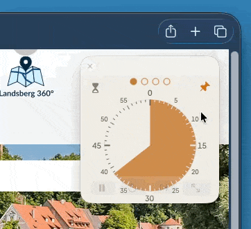
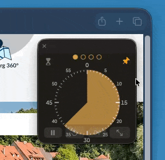
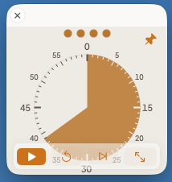
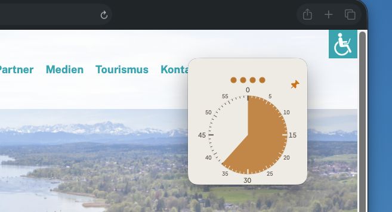
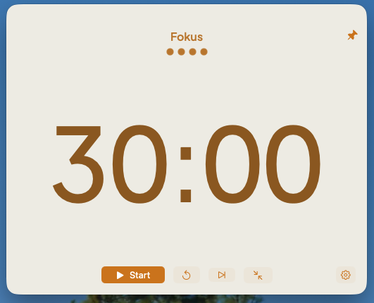
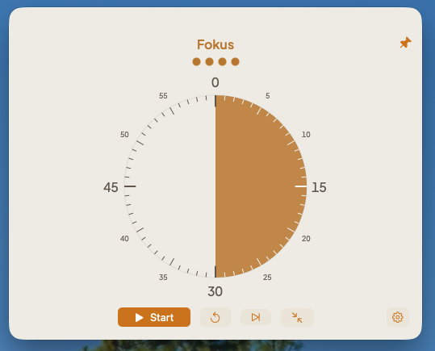
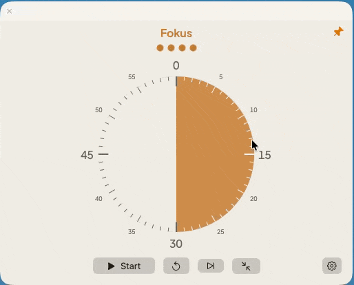
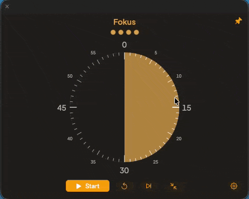

LifeStrings Timer
Der Fokus-Timer, der immer im Blick bleibt.
Version 2.0 · 0,6 MB · ab macOS 14 · kostenlos · von Apple notarisiert
Nach dem Laden die App in den Ordner „Programme“ ziehen. Beim ersten Start kommt der Hinweis, dass es sich um eine aus dem Internet geladene Datei handelt – einmal bestätigen.


Der LifeStrings Timer ist eine schlichte App für den Mac, die dabei unterstützt, im Pomodoro-Rhythmus zu arbeiten: Fokuszeit, kurze Pause, lange Pause nach der vierten Runde. Er schwebt über allen Fenstern – so bleibt die Fokuszeit bewusst im Blick. Die Zeiten und Intervalle lassen sich konfigurieren und so an die eigene Arbeitsweise anpassen.
Er ist das kleinste Werkzeug aus LifeStrings und schützt den Jetzt-Fokus: die Zeit, in der man sich ganz auf das konzentriert, was gerade dran ist.
Groß zum Einstellen, klein zum Danebenstellen
Klein genug, um den ganzen Tag neben der Arbeit zu stehen.


Immer im Vordergrund, nie im Weg
Ein Klick auf den Pin, und der Timer bleibt im Vordergrund – auch wenn ein anderes Programm den ganzen Bildschirm füllt.

Ziffern oder Scheibe, per Klick
Ein Klick auf die Anzeige wechselt zwischen beiden – Ziffern oder Scheibe, je nach Vorliebe.


Aktuelle Phase anpassen
Mehr oder weniger Zeit, direkt in der Anzeige verstellbar.


Was er bewusst nicht tut
Kein Konto nötig, keine Cloud-Anbindung, keine Projektverwaltung, keine Auswertung. Der Timer zählt die Zeit und sonst nichts. Auch er fokussiert sich auf eine Sache.
Version 2.0 · 0,6 MB · ab macOS 14 · kostenlos · von Apple notarisiert
Update-Liste
Wer das gebaut hat
Gebaut hat den Timer Thomas Jäger, naturalconsult. Entstanden ist er für den eigenen Gebrauch, im Rahmen von LifeStrings.
Thomas Jäger auf LinkedIn